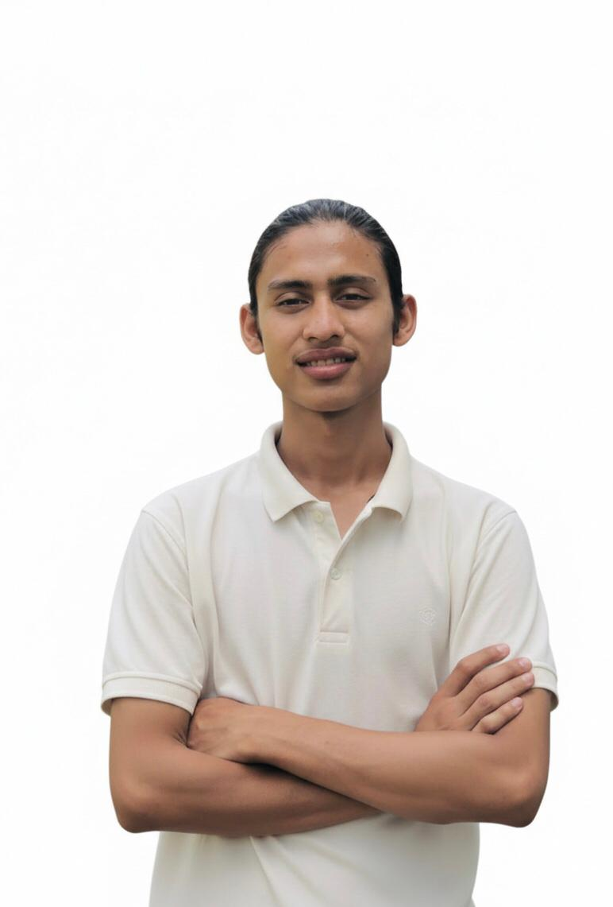
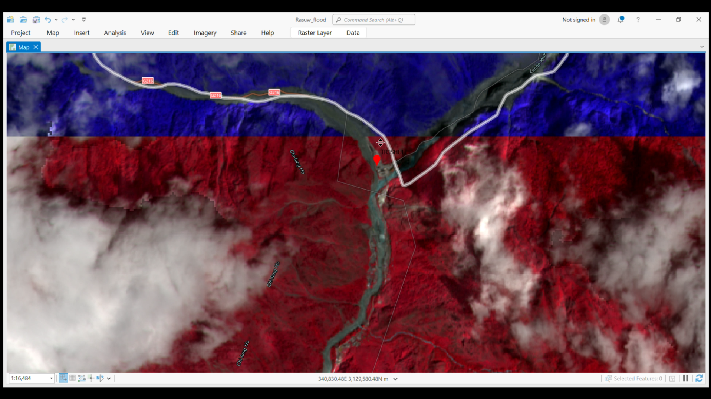
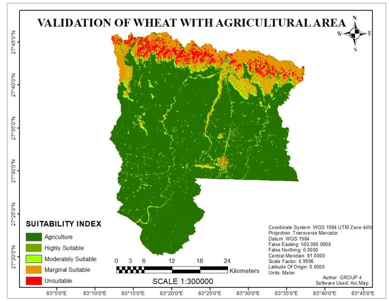

GIS & Mapping
ArcGIS Pro, QGIS, thematic mapping, and cartography.
GEOMATICS ENGINEERING STUDENT
B.E. Geomatics Engineering student at Kathmandu University, passionate about geospatial technology, spatial analysis, and integrating AI/ML and Deep Learning into mapping workflows.
GET TO KNOW ME
Learning, mapping, and exploring the world through geospatial technology and design.

I am currently pursuing a Bachelor’s degree in Geomatics Engineering (7th Semester) at Kathmandu University, Dhulikhel, Nepal. My primary focus includes GIS, satellite remote sensing, surveying, spatial data analysis, and exploring GeoAI, AI/ML, and Deep Learning applications for spatial problems.
Parallel to my engineering studies, I completed my tenure as the Graphic Designer for the Geomatics Engineering Society (2026/27 tenure), where I combined technical understanding with creative visual communication and design.
MY TOOLKIT
Tools and technologies I use or am currently learning.
ArcGIS Pro, QGIS, thematic mapping, and cartography.
Satellite imagery, raster processing, and image interpretation.
Deep learning for spatial data, object detection, and spatial ML workflows.
Geomatics surveying, spatial measurements, DEM & terrain analysis.
Visual branding, layout design, and visual communications.
Python, Java, AutoCAD, and Google Earth Engine.
MY ACADEMIC WORK
Selected academic work and practical geospatial exercises.

GIS · REMOTE SENSING
A project focused on assessing flood impacts in Rasuwa, Nepal, using satellite imagery and ArcGIS Pro.
View Related Work
GIS · CARTOGRAPHY
Academic work involving geographic data, thematic map preparation, and spatial analysis techniques.
View Related WorkLET'S CONNECT
Interested in geospatial technology, GIS projects, GeoAI research, design collaborations, or exchanging ideas? Feel free to reach out via email or LinkedIn.